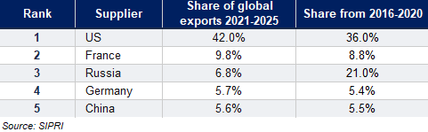
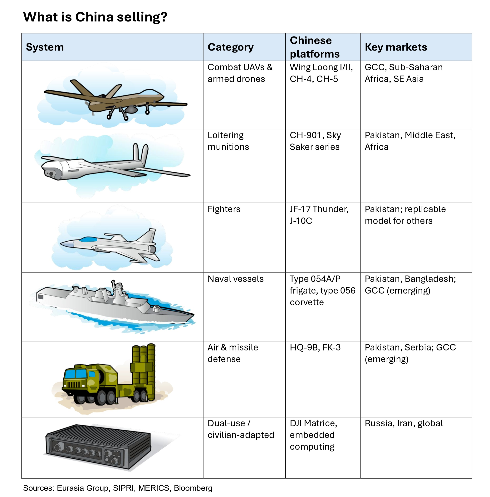
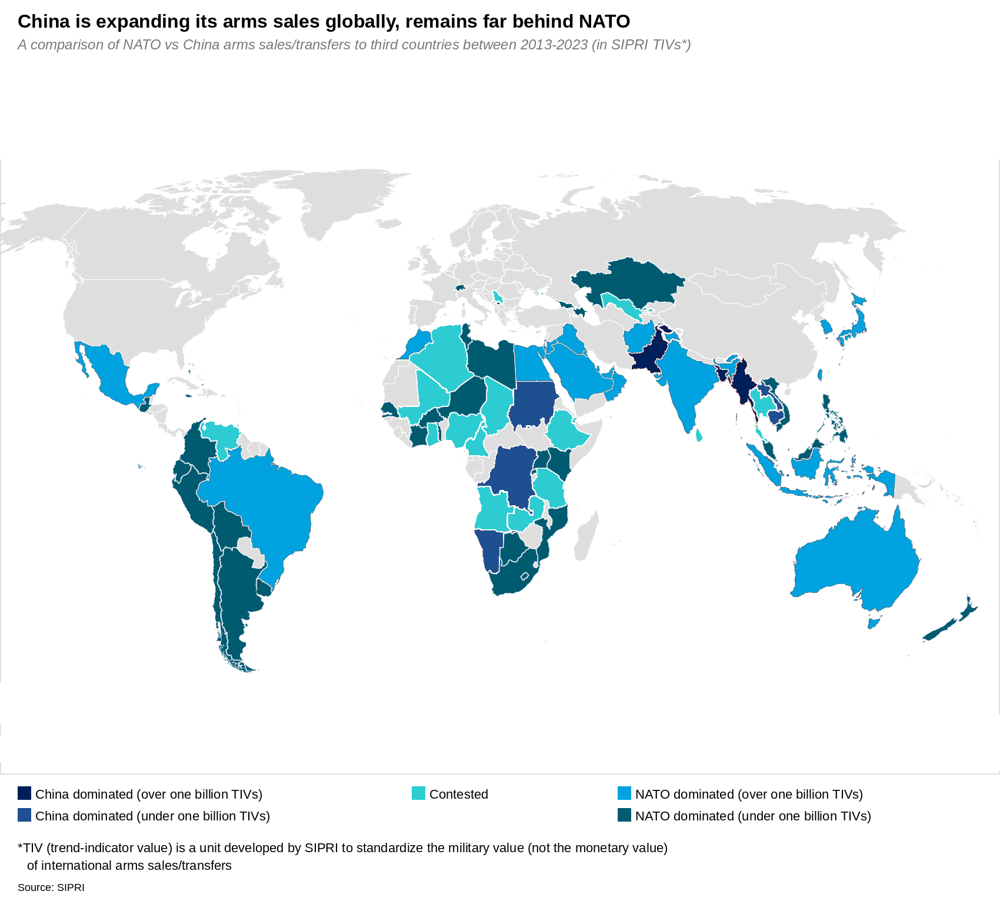

|
 |
|||
|
||||
|
||
China is positioning to be a key arms supplier in select markets in the long run. Across multiple categories, Chinese arms demonstrate increasing sophistication and cost-effectiveness. State-owned enterprises (SOEs) are showcasing China’s military capabilities and are eager to export excess capacity. At Eurosatory 2024, Chinese SOE Norinco presented NATO-standard artillery. Beijing does not yet pose a systemic challenge to Western primes, and it is restricted from exporting weapons to active conflict zones. Still, it is building a position in segments and geographies—including the Gulf and parts of Southeast Asia—that could become competitive by the 2030s. According to 2026 Stockholm International Peace Research Institute (SIPRI) data, China accounts for 5.6% of global finished arms exports — virtually unchanged from 5.5% in the previous five-year period. Russia’s share collapsed from 21% to 6.8% over the same period, creating a vacuum that China has failed to fill at scale. However, in upstream and intermediate defense inputs—rare earths, defense-grade electronics, and components for unmanned systems—China already commands over 80% of global production capacity.  Since it is not party to the Wassenaar Arrangement or the Missile Technology Control Regime, China’s firms have an edge in categories where Western competitors are prohibited from selling.  Chinese fighters can perform in combat, but a record of dead-end exports raises doubts. Although their deployment in Pakistan showed Chinese platforms can deliver, these systems remain unlikely to displace Western aircraft. China exports downgraded variants and focuses on buyers who cannot access Western equipment. The K-8 jet trainer sale to Egypt in the 1990s was a breakthrough deal, but Cairo is replacing those aircraft with no Chinese follow-on. Nigeria returned seven Chinese-supplied F-7 fighters in 2020, and Myanmar grounded Chinese jets in 2022 after major failures.  Pakistan will remain the largest market for Chinese arms exports in the near term. It accounted for 61% of Beijing’s total exports and sourced 80% of its imports from China during 2021-2025 amid tense US-Pakistan relations. Beijing sees Pakistan as a critical partner in preventing the inflow of extremists to China’s Xinjiang region. Africa remains a core market, although purchasing power is limited. African states face limited access to Western systems and fewer political conditions attached to arms sales. Chinese suppliers offer low-cost equipment with fewer strings attached, suited to modest capability improvements over their neighbors rather than cutting-edge platforms. In Southeast Asia, countries like Indonesia and Thailand seek to balance relationships with the US, China, and Russia, operating mixed fleets amid budget constraints and US export approvals. Chinese systems can fill gaps, particularly in UAVs, mid-tier fighters, and air defense, without forcing alignment. GCC countries are among China’s biggest new opportunities. Saudi Arabia reportedly signed a $5 billion deal with China in March to create a production line for the Wing Loong-3 combat drones. Riyadh is the only top 20 arms importer among China's clients but receives just 1% of Chinese exports—reflecting Riyadh's US security ties. US systems remain more capable and tied to the US security umbrella but are expensive and face political scrutiny, while Washington appears increasingly unpredictable as a security anchor. This creates an opening for Beijing, which could use it to sell more ballistic missiles or anti-drone technology to the kingdom, but probably not advanced combat aircraft or complex air defense systems in the foreseeable future. Post-Iran war, Arab Gulf states are diversifying away from Washington toward European middle powers and regional suppliers like Turkey. Gulf states will manage US blowback, but will favor Beijing's security profile in the region, creating opportunities for Chinese exports. Beijing’s arms exports are increasingly commercially driven. The central government previously assessed defense SOEs solely on People’s Liberation Army orders but is now encouraging them to pursue export growth, with performance targets and export divisions. Groups like Norinco count overseas receivables in their evaluations and are expanding into Global South markets for profit, not just statecraft. Still, Beijing continues to avoid security guarantees and remains cautious about possible confrontation with the US. Over time, China will become a threat to Western primes in swing-state markets. But Beijing will not reshape the competitive landscape. The security umbrella bundled with US and European equipment remains the West's most durable advantage; no Chinese arms deal can replicate it. Western equipment also remains the most appealing option. The risk is margin erosion in UAVs and lower-end systems, particularly in markets where US export approvals are slow or politically fraught. For countries seeking to develop defense export chains—such as Taiwan, Japan, and Ukraine—these systems might be a competitive option versus the US. |